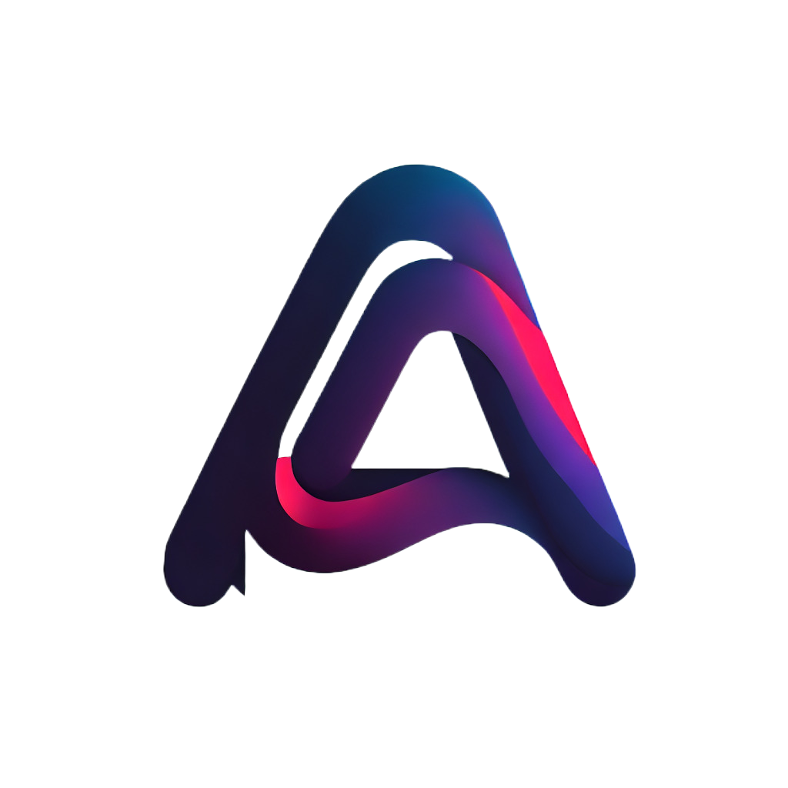

<nav class="navbar fixed-top my-1">
  <div class="container-fluid mx-2">
    <button class="navbar-brand navbar__tool-panel__item">
      
      Scrum Manager
    </button>
    <button class="navbar__toggle--bottom">
      
    </button>
    <button 
      class="navbar__tool-panel__item" 
      (click)="showSignInModal()">
      
      {{username || 'Log in'}}
    </button>
  </div>
</nav>
